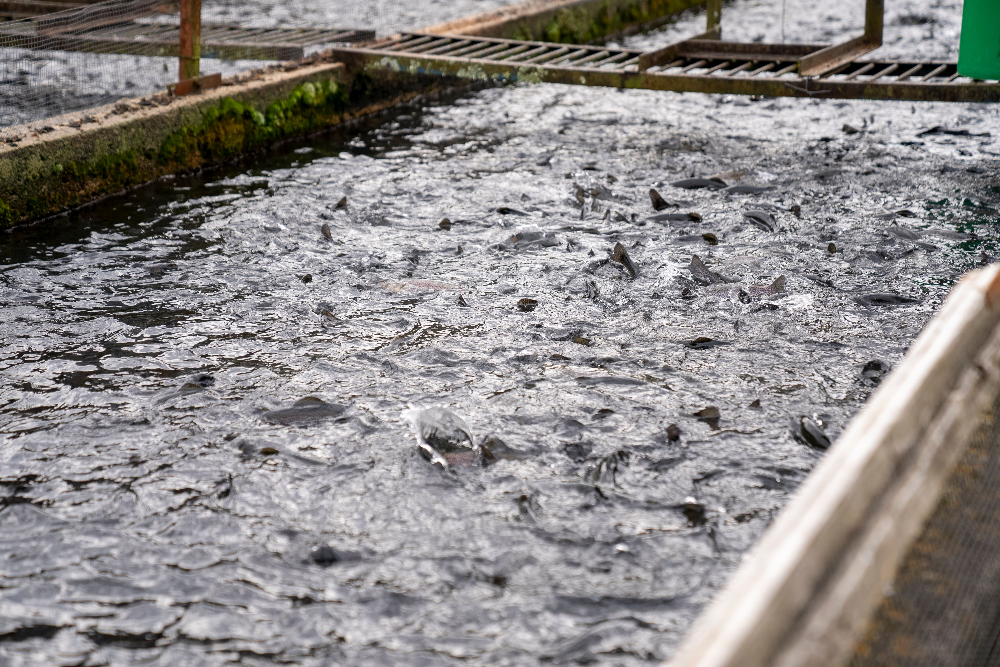
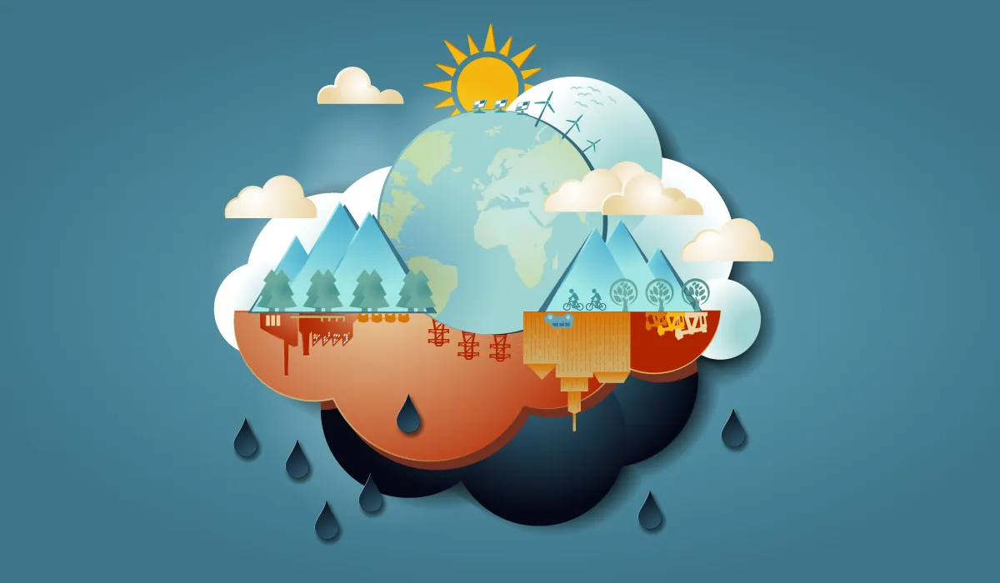
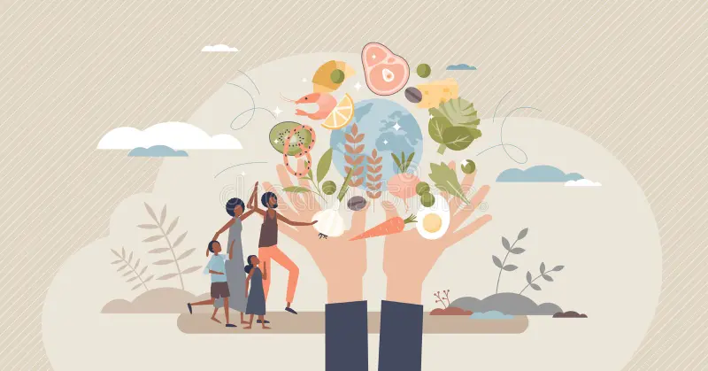
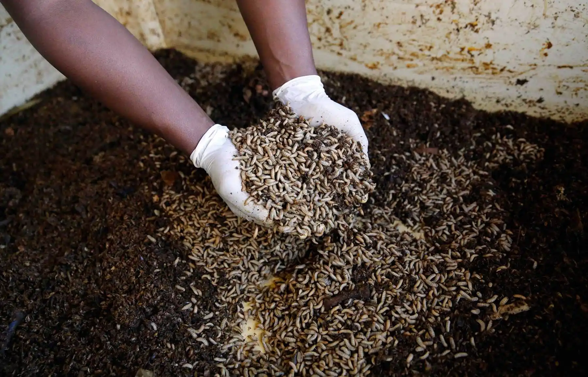
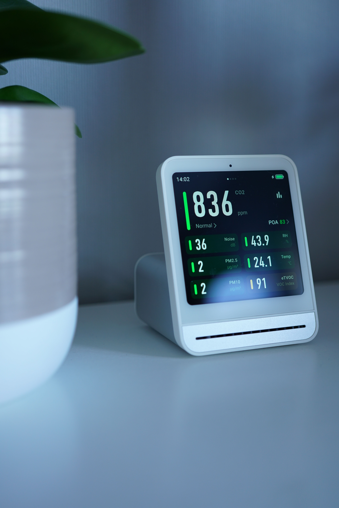
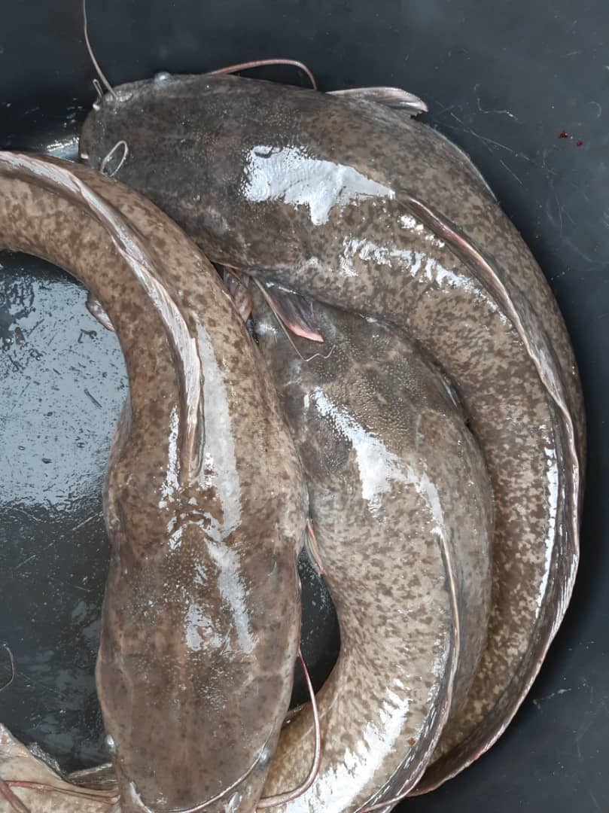
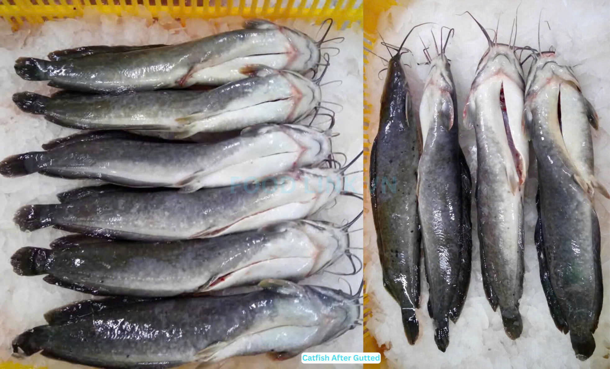
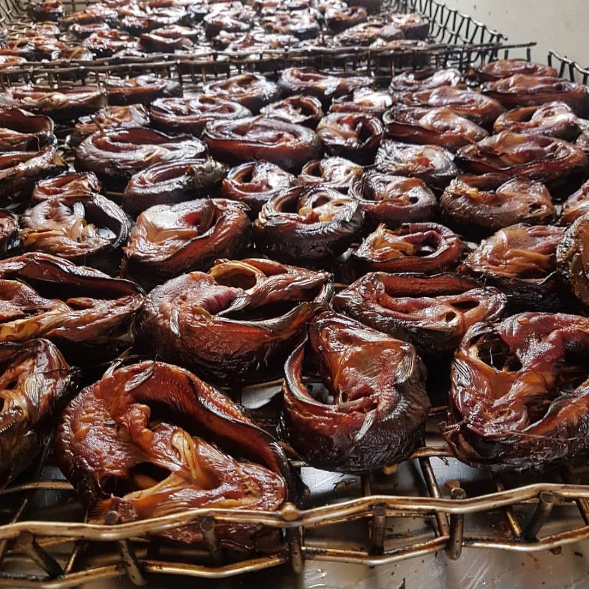
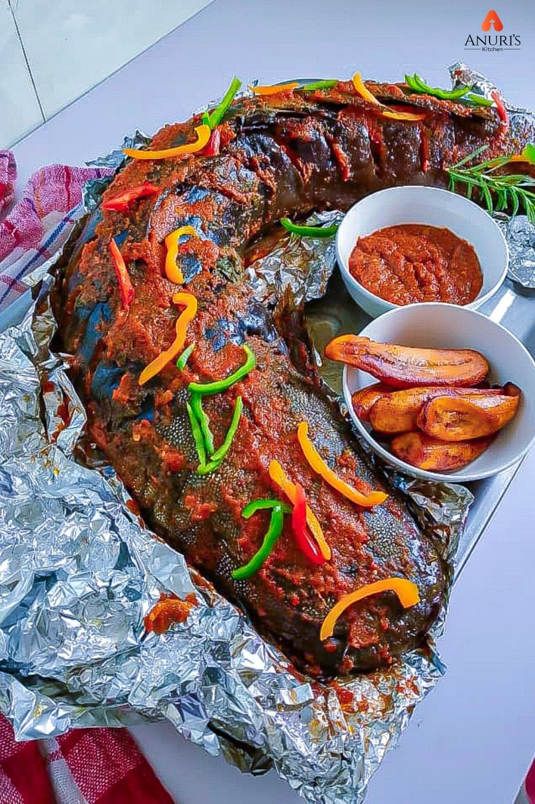

Resilient Food Security Driven by Data & Circular Innovation
Pioneering IoT-monitored African catfish farming, in-house black soldier fly bio-feed, and direct-to-market cold-chain delivery starting in Kigali, Rwanda.

About ClimaAqua Africa
ClimaAqua Africa is a Kigali-based agri-tech venture pioneering climate-resilient aquaculture in East Africa. We combine IoT-monitored African catfish farming with in-house Black Soldier Fly (BSF) bio-feed production to deliver affordable, sustainable protein to local communities.
Our integrated approach addresses three critical challenges simultaneously: adapting to climate change through data-driven farming practices, reducing dependency on imported fishmeal through circular feed manufacturing, and closing the protein deficit in urban Rwandan households through year-round local production.
Currently in the pilot set-up stage, we are seeking technical collaborations, pilot buyers, and strategic investment partners to scale our model across Rwanda and the broader East African region.
Where Three Priorities Meet
Integrating climate resilience, circular feed manufacturing, and affordable nutrition.

Climate Adaptation
Hardy African catfish species that thrive in changing temperatures, backed by real-time IoT water quality sensors and solar backups.

Food Security
Closing Kigali's protein deficit with year-round local production across 4 formats: Fresh, Frozen, Smoked, and Grilled.

Circular Economy
In-house feed formulation using Black Soldier Fly (BSF) larvae and local biowaste, cutting feed costs by up to 50%.
Live IoT Monitoring Telemetry

Multi-Format Product Offering
Value-added processing designed to reduce post-harvest loss and extend shelf-life.

Fresh Whole Catfish
Harvested daily for markets, restaurants, and direct Kigali household delivery.

Flash-Frozen Fillets
Hygienically prepped and frozen for retail shelves and long-term storage.

Traditional Smoked
Shelf-stable, rich flavor profile suited for institutional and regional sales.

Ready-to-Eat Grilled
Marinated and ready for hotels, events, caterers, and food service partners.
Impact & Future Goals
Measurable outcomes driving climate-resilient food security across East Africa.
Climate Resilience
Deploying IoT sensors and solar-powered backups to maintain optimal water quality despite increasing temperature variability, ensuring consistent yields year-round.
Food Security
Producing fresh, frozen, smoked, and grilled catfish formats to supply Kigali markets, restaurants, and households with affordable, locally-sourced protein.
Circular Economy
Converting agricultural biowaste into high-protein BSF larvae feed, reducing reliance on imported fishmeal and cutting feed costs by up to 50%.
Community Empowerment
Creating local employment opportunities in aquaculture, feed production, and cold-chain logistics while training farmers in IoT-enabled precision farming techniques.
Meet Our Founders
The team driving climate-resilient aquaculture innovation across East Africa.

Benjamin Kettey-Tagoe
Co-Founder

Peniel Nissi Obeng
Co-Founder

Albert Afiti
Co-Founder

Paul Masamvu
Co-Founder
Partner & Connect With Us
Seeking technical collaborations, pilot buyers, and strategic investment.